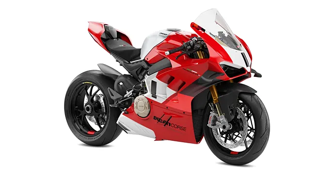
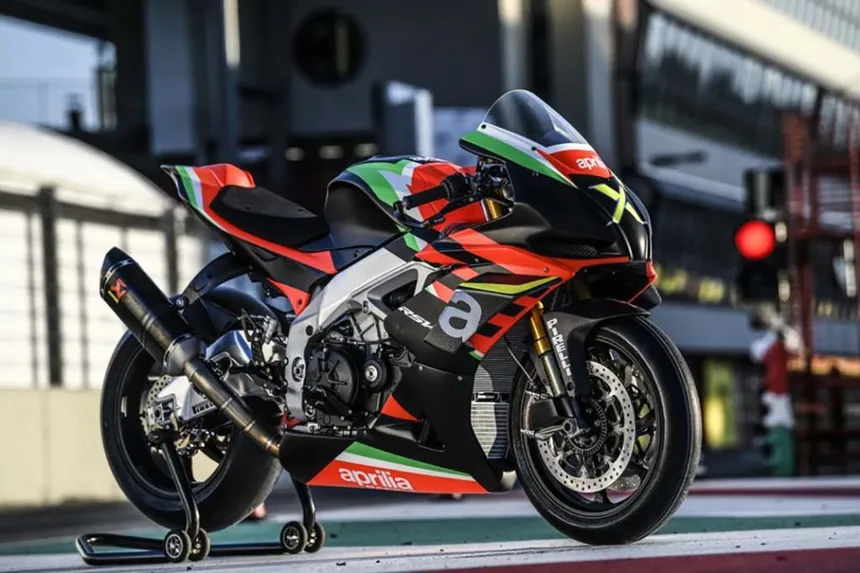
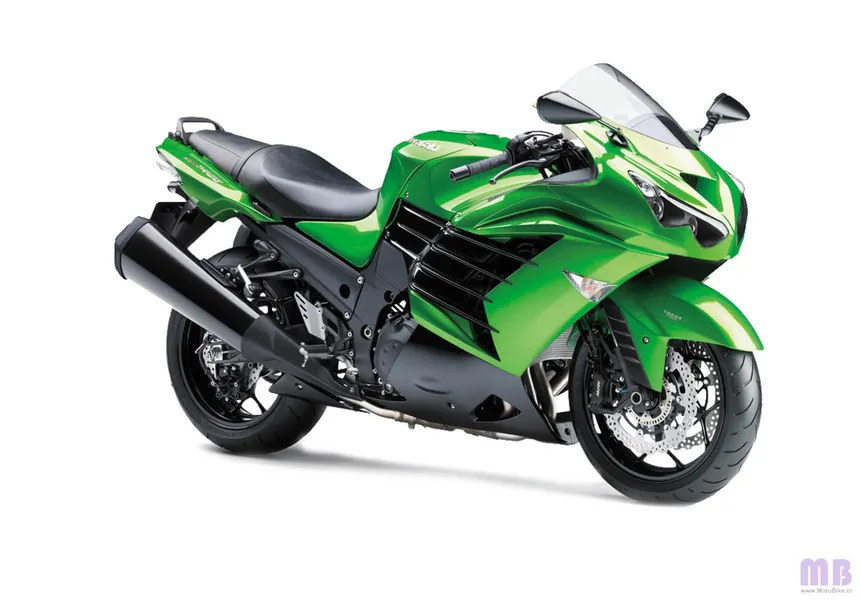
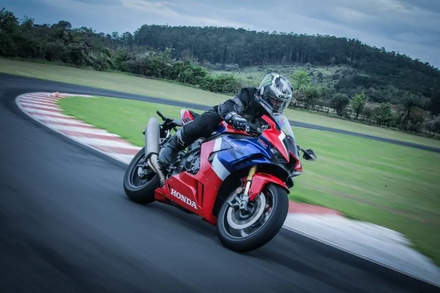
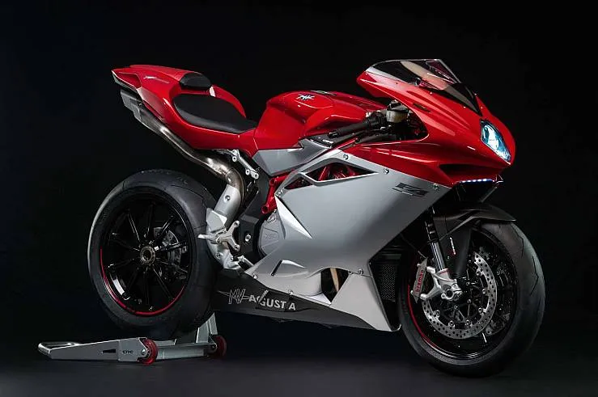
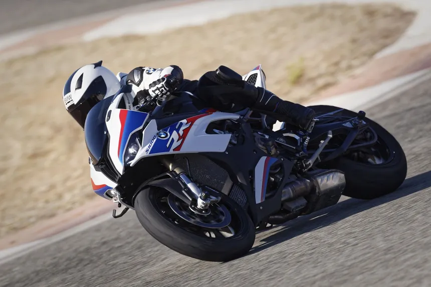
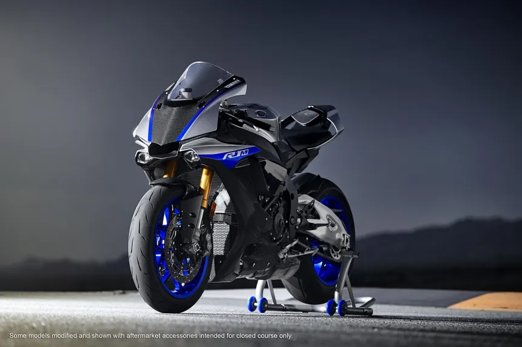
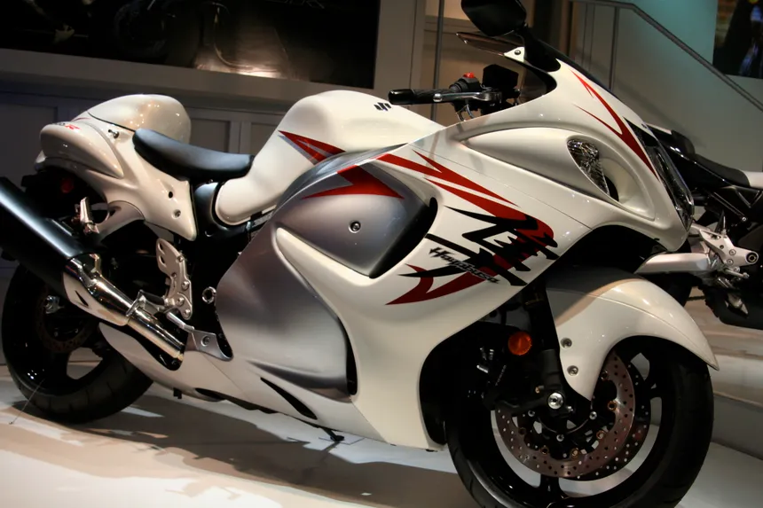
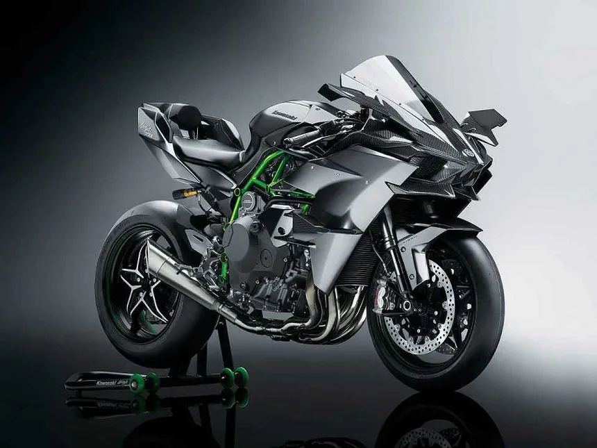
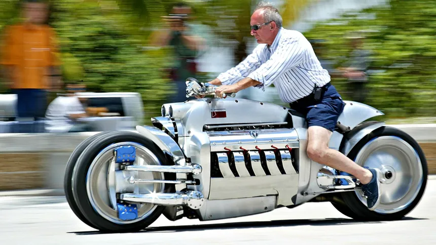

Top 10 Motos Mais Rápidas do Mundo.
10º Ducati Panigale V4 R - 288km/h:
9º Aprilia RSV4 1100 Factory - 290 km/h (180 mph):
8º Kawasaki ZX-14R - 290 km/h (180 mph):
7º Honda CBR1000RR-R Fireblade SP - 297 km/h (185 mph):
6º MV Agusta F4 RC - 298 km/h (185 mph):
5º BMW S1000RR - 299 km/h (186 mph):
4º Yamaha YZF-R1M - 300 km/h (186 mph):
3º Suzuki Hayabusa - 312 km/h (194 mph):
2º Kawasaki Ninja H2R - 331 km/h (206 mph):
1º Dodge Tomahawk - 350 km/h (217 mph):
